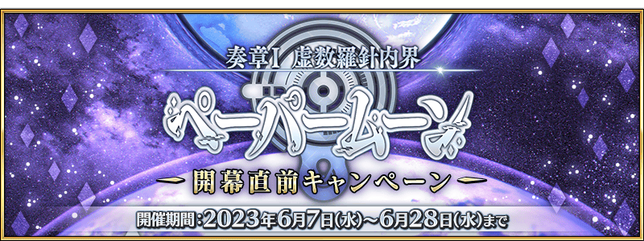

『奏章Ⅰ 虛數羅針內界 平面之月』預定2023年6月中旬開幕！
開放條件為通過奏章序幕(プロローグ) 「應盡職責的呼喚 0」，敬請務必推進主線關卡期待續報！
◆開幕預定時期◆
2023年6月中旬～(預定)
◆開放條件◆
通過奏章序幕(プロローグ) 「應盡職責的呼喚 0」
※不需要通過亞種特異點(從Ⅰ到Ⅳ)、主線關卡第2部 第5.5章、第2部 第6.5章。
其他還有期間限定『「奏章Ⅰ 虛數羅針內界 平面之月」開幕前夕宣傳活動』等的情報公開中！
關於詳情，請自下述橫幅確認。
■『「奏章Ⅰ 虛數羅針內界 平面之月」開幕前夕宣傳活動』詳細情報 